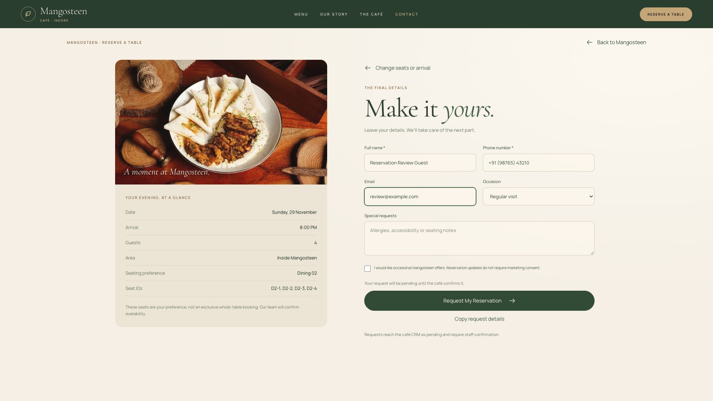
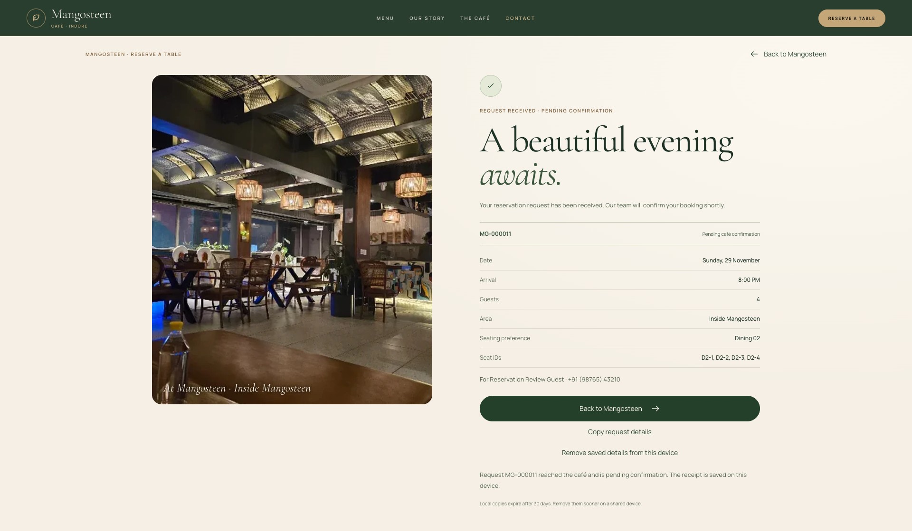

MANGOSTEEN · RESERVATION REVIEW
Find your perfect table.
All photographs are genuine café area previews. The independently selectable furniture map retains the existing schematic positions and identifiers; it is not a surveyed floor plan. No deployment.
Desktop seating
Mobile
Guest details and confirmation

Details
Real API receipt · disposable test databaseComplete interaction recordings
Preservation evidence
Pixel-identical sampled homepage/menu screenshots · Menu, QR, ordering and CRM regression · Production build and nine passing backend tests